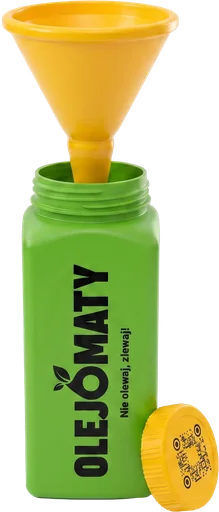

Przesuwaj butelkę z lejkiem i złap 20 kropli oleju z jeżdżącej patelni. Masz trzy życia — pojedyncza zgubiona kropla nie kasuje wyniku.
Zużytego oleju nie wylewamy do zlewu. Po wystudzeniu należy przelać go do szczelnej butelki i oddać do odpowiedniego punktu zbiórki. Gorący olej zawsze przelewa osoba dorosła!
Steruj myszką lub strzałkami ← →
Trzy krople uciekły do zlewu — zdarza się nawet detektywom! W nowej próbie dostajesz świeże trzy życia.
Włączamy spokojniejsze tempo. Zebrane wskazówki pomogą Ci w kolejnej próbie.
Złapałeś wszystkie 20 kropli zużytego oleju. Olej nie trafił do zlewu ani kanalizacji.
Zdobywasz kolejną literę do hasła:
Zapamiętaj literę „Z”. Będzie potrzebna w finale lekcji.
Wróciłeś? Kropla czeka!